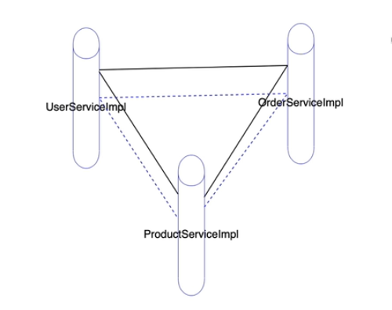
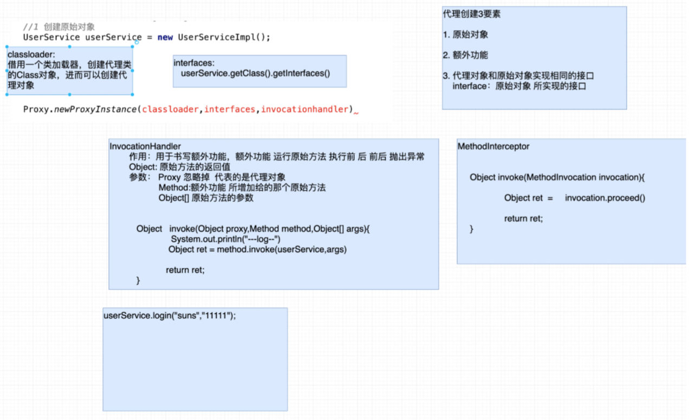
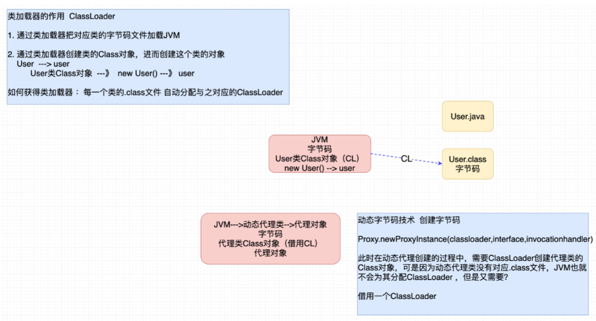
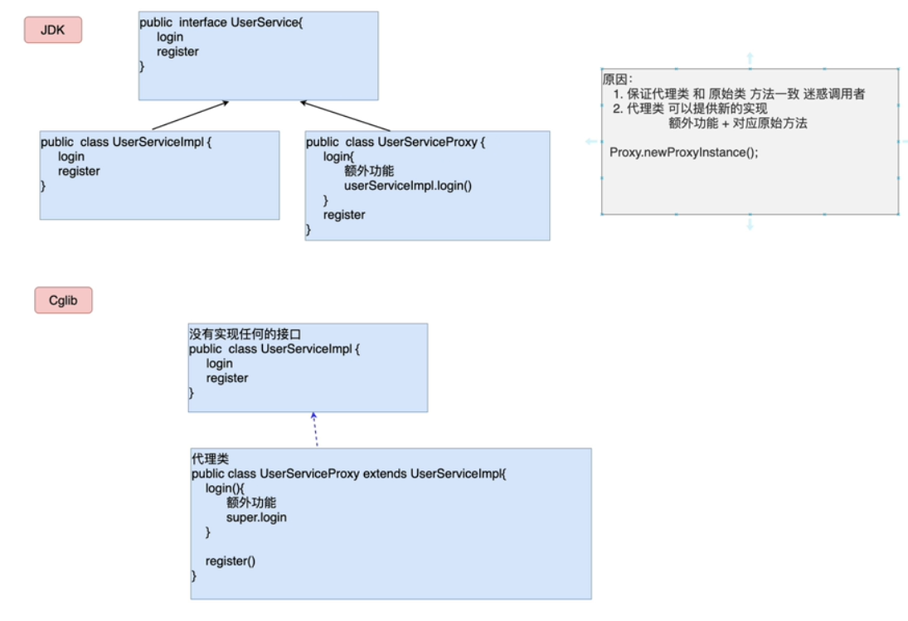
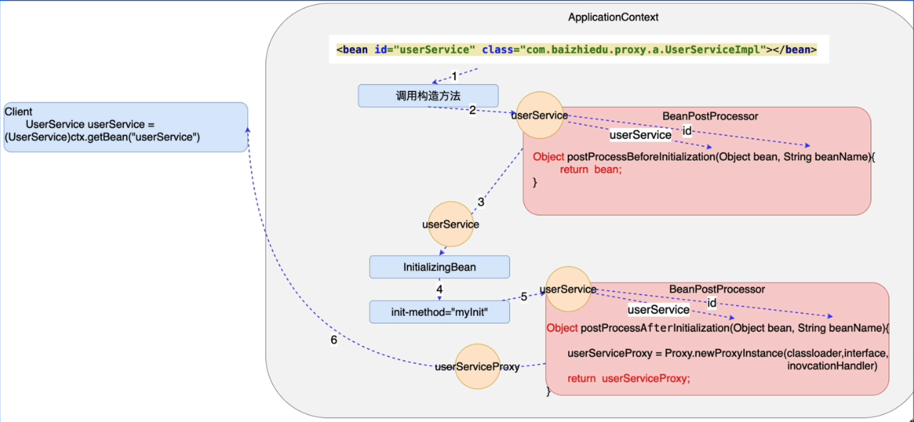
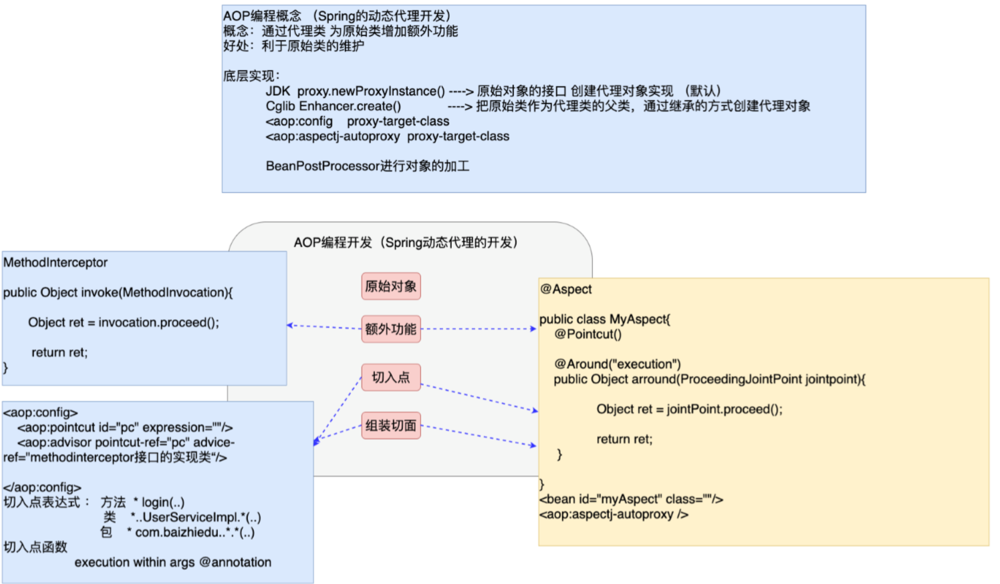

Spring AOP
· 2 min read
第一章、AOP编程
1、AOP概念
AOP(Aspect Oriented Programing) 面向切面编程 = Spring 动态代理开发
以切面为基本单位的程序开发，通过切面间的彼此协同，完成程序的构建
切面 = 切入点 + 额外功能
OOP(Object Oriented Programing) 面向对象编程 Java
以对象为基本单位的程序开发，通过对象的彼此协同，相互调用，完成程序的构建
POP(Producer Oriented Programing) 面向过程编程 C
以过程为基本单位的程序开发
AOP概念：
本质就是 Spring 的动态代理开发，通过代理类为原始类增加额外功能。
好处：利于原始类的维护
注意：AOP编程不可能取代OOP，OOP编程有意补充。
2、AOP编程的开发步骤
原始对象
额外功能（MethodInterceptor）
切入点
组装切面（额外功能 + 切入点）
3、切面的名词解释

第二章、AOP的底层原理
1、核心问题
1、AOP如何创建动态代理类（动态字节码技术）
2、Spring工厂如何加工创建代理对象
通过原始对象的id值，获得的是代理对象
2、动态代理类的创建
2.1、JVM 创建动态代理的原理
- Proxy.newProxyInstance 方法参数详解


-
编码
public static void main(String[] args) { UserService userService = new UserServiceImpl(); InvocationHandler handler = (proxy, method, objects)->{ System.out.println("---------- proxy jdk log ---------"); Object ret = method.invoke(userService, objects); return ret; }; UserService userServiceProxy = (UserService) Proxy.newProxyInstance( UserServiceImpl.class.getClassLoader(), userService.getClass().getInterfaces(), handler); userServiceProxy.login("liam", "11111"); userServiceProxy.register(new User()); }
2.2、CGlib 创建动态代理的原理
原理：父子继承关系创建代理对象，原始类作为父类，代理类作为子类，这样既可以保证二者方法一致，同时在代理类中提供新的实现（额外功能 + 原始方法）。

代码：
public static void main(String[] args) {
UserService userService = new UserService();
Enhancer enhancer = new Enhancer();
enhancer.setClassLoader(TestCglib.class.getClassLoader());
enhancer.setSuperclass(userService.getClass());
MethodInterceptor methodInterceptor = (o, method, objects, methodProxy) -> {
System.out.println("------------ Cglib Log ---------");
Object ret = method.invoke(userService, objects);
return ret;
};
enhancer.setCallback(methodInterceptor);
UserService userServiceProxy = (UserService) enhancer.create();
userServiceProxy.login("liam", "123456");
userServiceProxy.register(new User());
}
-
总结
JDK 动态代理 Proxy.newProxyInstance() 通过接口创建代理的实现类 Cglib 动态代理 Enhancer 通过继承父类创建的代理类
2.3、Spring工厂如何加工原始对象
- 思路分析

-
编码
public class ProxyBeanPostProcessor implements BeanPostProcessor { @Override public Object postProcessBeforeInitialization(Object bean, String beanName) throws BeansException { return bean; } @Override public Object postProcessAfterInitialization(Object bean, String beanName) throws BeansException { InvocationHandler handler = (proxy, method, args) -> { System.out.println(" --------- proxy log --------"); Object ret = method.invoke(bean, args); return ret; }; return Proxy.newProxyInstance( ProxyBeanPostProcessor.class.getClassLoader(), bean.getClass().getInterfaces(), handler ); } }<bean id="userService" class="com.liam.service.impl.UserServiceImpl"/> <!-- 实现 BeanPostProcessor 进行加工 配置文件中对 BeanPostProxy 进行配置 --> <bean id="proxyBeanPostProcessor" class="com.liam.jdk.ProxyBeanPostProcessor"/>
第三章、基于注解的AOP编程
1、基于注解的AOP编程的开发步骤
- 原始对象
- 额外功能
- 切入点
- 组装切面
@Aspect
public class MyAspect {
@Around("execution(* login(..))")
public Object around(ProceedingJoinPoint joinPoint) throws Throwable {
System.out.println(" -------- aspect log -----");
Object ret = joinPoint.proceed();
return ret;
}
}
1、额外功能
2、切入点
3、组装切面
<bean id="around" class="com.liam.aspect.MyAspect"/>
<!--告知 Spring 基于注解进行AOP编程-->
<aop:aspectj-autoproxy/>
2、细节
-
切入点复用
在切面类中定义一个函数 @PointCut 注解 通过这种方式，定义切入点表达式，后续更加有利于切入点复用 @Aspect public class MyAspect { @Pointcut("execution(* login(..))") public void myPoint() {} @Around(value = "myPoint()") public Object around(ProceedingJoinPoint joinPoint) throws Throwable { System.out.println(" -------- aspect log -----"); Object ret = joinPoint.proceed(); return ret; } @Around(value = "myPoint()") public Object around1(ProceedingJoinPoint joinPoint) throws Throwable { System.out.println(" -------- aspect liam -----"); Object ret = joinPoint.proceed(); return ret; } } -
动态代理的创建方式
AOP底层实现 2种代理创建方式 1.JDK 动态代理 Proxy.newProxyInstance() 通过接口创建代理的实现类 2.Cglib 动态代理 Enhancer 通过继承父类创建的代理类 默认情况 AOP编程 底层应用JDK动态代理创建方式 如果切换为Cglib 1、基于注解AOP开发 <aop:aspectj-autoproxy proxy-target-class="true"/> 2、传统AOP开发 <aop:config proxy-target-class="true"></aop>
第四章、AOP开发中的一个坑
/*
在同一个业务中，进行业务方法间的相互调用，只有最外层的方法，才是加入了额外功能(内部的方法，通过普通的方式调用，都调用的是原始方法)。如果想让内层的方法也调用代理对象的办法，就要 ApplicationContextAware 获得工厂，进而获得代理对象。
*/
public class UserServiceImpl implements UserService, ApplicationContextAware {
private ApplicationContext ctx;
@Override
public void login(String name, String password) {
System.out.println("UserServiceIm register 业务运算 DAO ");
UserService userService = (UserService) ctx.getBean("userService");
userService.register(new User("liam", "abc@123", "abc@123.com"));
}
@Override
public void register(User user) {
System.out.println(user);
}
@Override
public void setApplicationContext(ApplicationContext applicationContext) throws BeansException {
this.ctx = applicationContext;
}
}
第五章、AOP阶段知识总结
